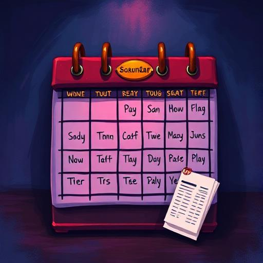
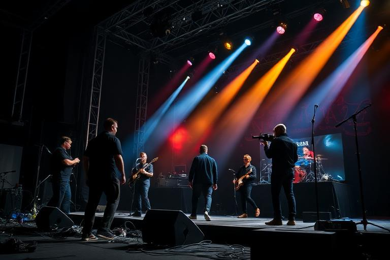

Live performance
Preparing for Your First Gig
Booking a show gets your name on the calendar. It does not make the band ready. The strongest approach is to work backwards from show time: can everyone get there, do you have a usable setlist, do the members know the material, and have you left enough time to fix anything that is not ready?

Before you book
Check the venue and city, date and time, the band’s existing schedule, travel feasibility, member availability and whether you already have enough suitable material to build the intended set.
1. Booking the show
Choose shows your band can realistically fulfil. A smaller appropriate opportunity that you can prepare for is generally a better career step than an ambitious booking that creates impossible travel or rehearsal pressure.

2. Choose a setlist
A setlist is more than a list of song names. It is the material the band is committing to perform. Build it from songs the band can legitimately play and then use the preparation systems to make that material dependable.
Enough material
Make sure the set is suitable for the show rather than discovering too late that you cannot fill it.
Prepared material
A strong song that nobody has practised together is still a risk on stage.
Band identity
Think about how the songs fit your band and the audience you are trying to build.
Change when needed
If circumstances change after booking, review the set rather than blindly keeping an unsuitable plan.
3. Rehearse the songs
Rehearsal turns individual musicians into a group that knows the same arrangements and material. It supports familiarity, cohesion and confidence in the repertoire you plan to use.


Longer or repeated preparation can be valuable, but every rehearsal also occupies schedule time. The useful question is not “how many rehearsals is optimal?” but “what is still unprepared, and what else must the band do before show day?”
4. Check the people
Band roles matter because different songs and performance setups ask members to contribute different musical capabilities. Also confirm that the people expected to participate are actually available and in the right place.
- Are the required band members available at show time?
- Are their musical roles appropriate for the songs being played?
- Are members travelling or booked into another activity?
- Has the band changed membership since the show was booked?
- Is anyone’s condition likely to make a demanding performance harder?
5. Stage equipment and crew
As your band grows, the live operation can become more sophisticated. Stage equipment, crew and other show preparation can support the performance and the scale of production you are trying to deliver.



6. Show day checklist
- The show is still on the schedule and the date/time are understood.
- The band is in the correct city with travel completed.
- The intended setlist is selected and still makes sense.
- The songs have been prepared to a level you are comfortable risking in public.
- Expected members are available and their roles make sense.
- Stage/crew choices have been reviewed where relevant.
- You have not created a last-minute activity conflict.
- Character and band condition are not being ignored.
What affects the performance?
RockMundo deliberately evaluates a live show as a combination of factors rather than exposing a single “gig score” recipe. Relevant musical ability, song quality, familiarity and rehearsal, band chemistry, member contribution, set preparation, condition, stage/crew context, venue and audience circumstances can all be meaningful.
After the show
Review the outcome rather than only the headline score. Did particular songs work well? Is the band ready for a bigger opportunity? Did travel or preparation feel too tight? A show can influence fame, fans, finances, history and future decisions, so use it as feedback for the next booking.